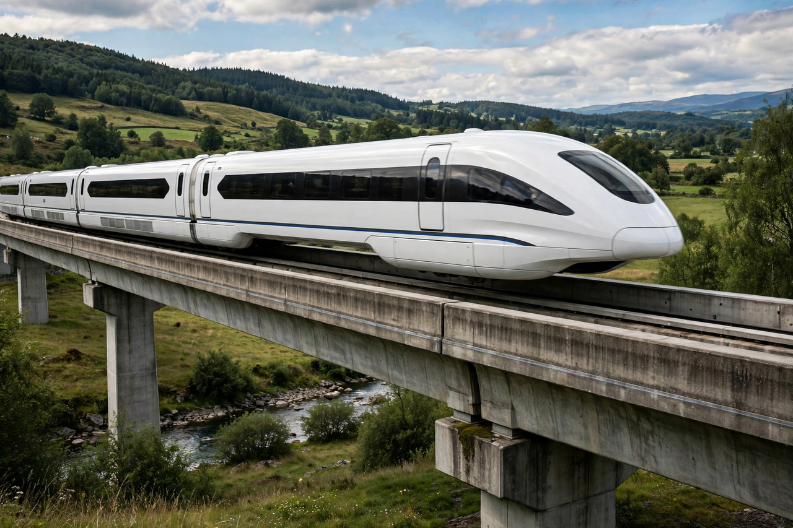

Maglev
From Wikipedia, the free encyclopedia

The Shanghai maglev train.Maglev (magnetic levitation) is a system of rail transport whose vehicles levitate above a guideway using magnets, eliminating rolling friction and allowing very high speeds. The Shanghai maglev, using German Transrapid technology, has been the only high-speed commercial maglev since 2004, reaching 431 km/h in service; Japan\'s superconducting SCMaglev has tested at 603 km/h and is being built for the Chūō Shinkansen.
Principles
Two main approaches exist: electromagnetic suspension (EMS), where electromagnets attract the vehicle up to a steel guideway (Transrapid), and electrodynamic suspension (EDS), where superconducting magnets repel the vehicle above the track at speed (Japanese SCMaglev). Propulsion is by linear motors in the guideway.
History
Patents date to the early 20th century; Eric Laithwaite developed the linear induction motor in Britain, and a short maglev shuttle ran at Birmingham Airport (1984–1995). Germany\'s Transrapid was demonstrated at Emsland but never adopted at home, instead being exported to Shanghai.
Services and future
Low-speed urban maglevs operate in Japan (Linimo), South Korea (Incheon) and China (Changsha, Beijing S1). The Chūō Shinkansen maglev between Tokyo and Nagoya would cut the journey to about 40 minutes at 500 km/h, but construction has been delayed, notably over water concerns in Shizuoka.